← 返回阅读库 · 原论文目录
论文讲解阅读文档 · 论文精读 · v240
单步秒生图！性能暴增50%！MeanFlow
视频时长 00:12:47；讲解文字 4,121 字符；提取讲解画面 54 张。按视频原顺序阅读，每段文字保留时间戳。
文字来自整段视频的自动语音转写，按自然停顿分段，并与 PPT / 论文页面 / 演示画面对齐。未将讲解压缩为摘要；术语、数字和口述公式请结合画面及原论文核对。 阅读稿已校正规范部分明确术语误识别；原始逐字稿和每处修改记录另行保留。
讲解画面为源视频截图（576×360），不是可编辑 PPT 文件。全片按每秒 2 帧扫描内容变化，逐步展开页保留；连续动画保留代表画面。清晰度受源视频限制。
下载完整资料包 · 含离线 HTML、PDF、Word、全部 PPT 画面和字幕。
原论文与材料
Mean Flows for One-step Generative Modeling · 下载完整 PDF（16 页）
按时间阅读
00:00:00–00:00:01 · 画面 001
00:00:00–00:00:01 · 画面 001当 Sora 还在用上百步的算法生成 4 秒钟的视频时，何恺明的团队已经让 AI 图像生成进入一步到位的时代。这个叫 MeanFlow 的最新研究成果，用秒杀 Stable Diffusion 的渲染速度，以及碾压 Midjourney 的迭代效率，直接一步封神。计算机视觉大神何恺明再放核弹级成果。
00:00:01–00:00:05 · 画面 002
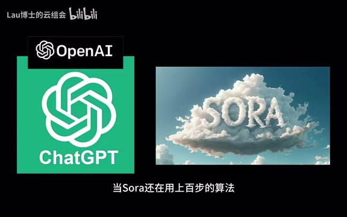
00:00:01–00:00:05 · 画面 00200:00:05–00:00:09 · 画面 003
00:00:05–00:00:09 · 画面 00300:00:09–00:00:10 · 画面 004
00:00:09–00:00:10 · 画面 00400:00:10–00:00:14 · 画面 005
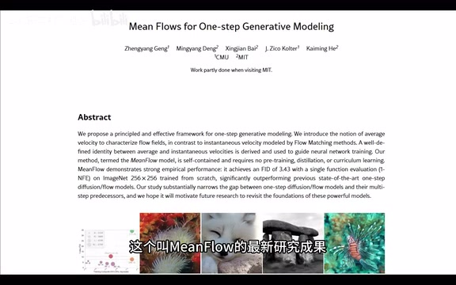
00:00:10–00:00:14 · 画面 00500:00:14–00:00:18 · 画面 006
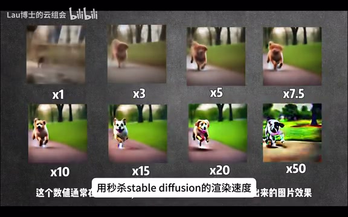
00:00:14–00:00:18 · 画面 00600:00:18–00:00:22 · 画面 007
00:00:18–00:00:22 · 画面 00700:00:22–00:00:26 · 画面 008
00:00:22–00:00:26 · 画面 008无需预训练和知识蒸馏，单步生成质量飙升 50%今天我们就来拆解这个改写图像生成规则的 MeanFlow。欢迎来到六博士的云组会，我们每周都将至少有一篇高质量的论文精读发布出来。相信在一系列的论文学习以后，你就能成为人工智能领域的专家。
00:00:26–00:00:30 · 画面 009
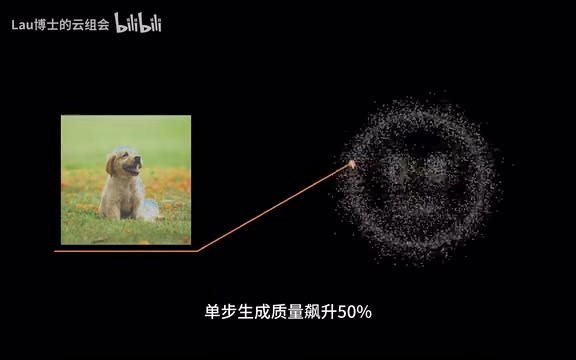
00:00:26–00:00:30 · 画面 00900:00:30–00:00:34 · 画面 010
00:00:30–00:00:34 · 画面 01000:00:34–00:00:35 · 画面 011
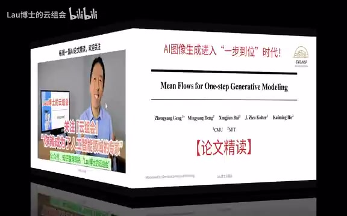
00:00:34–00:00:35 · 画面 01100:00:35–00:00:43 · 画面 012
00:00:35–00:00:43 · 画面 01200:00:43–00:00:45 · 画面 013
00:00:43–00:00:45 · 画面 01300:00:45–00:00:47 · 画面 014
00:00:45–00:00:47 · 画面 014今天我们要介绍的是一篇关于一步生成的研究论文，标题叫做 Mean Flows for One-Step Generative Modeling。这篇文章是由 CMU 以及 MIT 的人员共同撰写。这篇文章提出了一种新的框架，用于高效的进行一步生成的建模。在论文里面，作者们引入了平均速度的概念，通过这个概念显著了提高了生成模型的性能。
00:00:47–00:01:15 · 画面 015
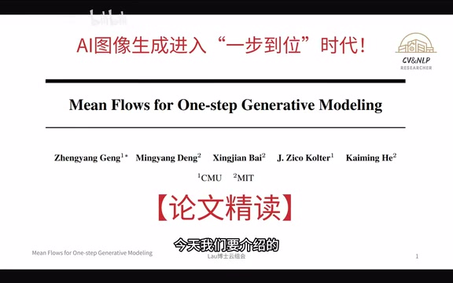
00:00:47–00:01:15 · 画面 01500:01:15–00:01:16 · 画面 016
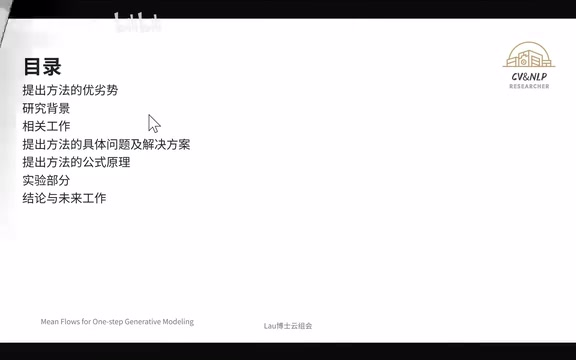
00:01:15–00:01:16 · 画面 016在接下来的 BV 当中，我们首先要了解这个提出方法里面，它有什么样的一个优势跟劣势。接下来是介绍有关背景的一些内容。再有后面的几个部分就是围绕着提出方法进行展开。我们首先进入到提出方法的优劣势。
00:01:16–00:01:35 · 画面 017
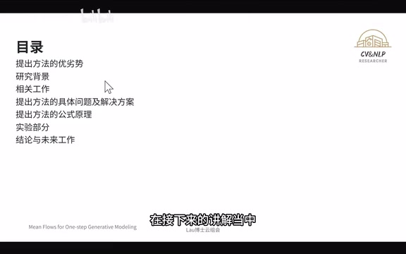
00:01:16–00:01:35 · 画面 01700:01:35–00:02:35 · 画面 018
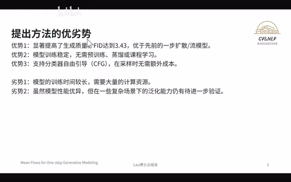
00:01:35–00:02:35 · 画面 018在这个部分作者提及到 MeanFlow 的模型有三个的主要优势，首先这个模型它生成的质量上取得了显著的提升，FID 的值达到了 3.43，比之前的移步扩散模型或是流模型有了很大的进步。第二个优势就是它训练的过程当中非常的稳定，不需要任何的预训练、蒸馏或是课程学习。使得模型的训练更加的高效以及便捷。另外这个模型还支持分类器的自由引导，在采样的时候不会额外的去增加成本。这个模型也总结了两个劣势，首先的第一个就是它的训练的时间是比较长的，需要大量的计算资源。
另外，井管模型在他提到的一些实验里面表现得非常优异，但是在一些复杂的场景里面的泛化能力还是有待去验证的。在了解完了方法的优劣势以后，我们来看一下这篇文章的研究背景。这篇文章在引言的部分就提到了生成模型的目标是将先验分布怎么样去转化成数据分布。
00:02:35–00:02:36 · 画面 019
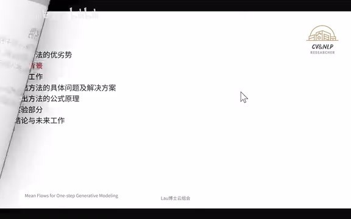
00:02:35–00:02:36 · 画面 01900:02:36–00:02:41 · 画面 020
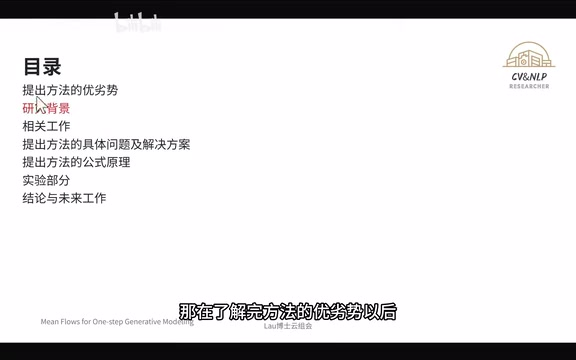
00:02:36–00:02:41 · 画面 02000:02:41–00:04:17 · 画面 021
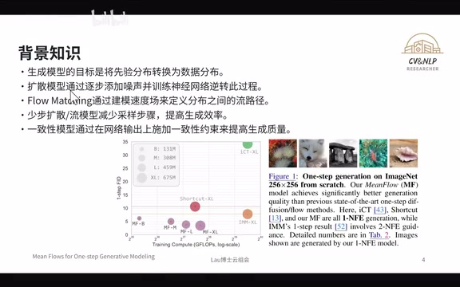
00:02:41–00:04:17 · 画面 021为了实现这个目标扩散模型它是通过逐步的去添加噪声然后训练神经网络的逆转的这个过程 Flow Matching 的话就是通过建模速度场来定义分布之间的流路径近年来少部扩散以及流模型也逐渐的受到了关注。那这些模型啊是通过减少采样的步骤呢来提高这个生成的效率。那另外呢，一致性的模型啊在这个网络的输出上呢增加了这种一致性的约束呢，也提高了生成模型的质量。那这些研究啊都给 MeanFlow 呢提供了电机的基础。
在 MeanFlow 里面，作者引入了平均速度的概念。这跟传统的方法去用瞬时速度是很不一样的。通过这种新的视角，MeanFlow 的模型能够更有效的去做生成。在这里有一张文章的图一，这个图一里面有两个指标，纵轴是 FID，横轴是 GFLOPs。这两个指标都是越小越好的。我们可以看到。无论是哪一种规模下的这个 MeanFlow 的这个模型都是靠近 0 的这个方向的。那就说明了这个模型是非常具备竞争力的。相关工作实际上是研究背景的拆解的讲解。那我们接下来看一下相关工作。
00:04:17–00:04:18 · 画面 022
00:04:17–00:04:18 · 画面 02200:04:18–00:04:24 · 画面 023
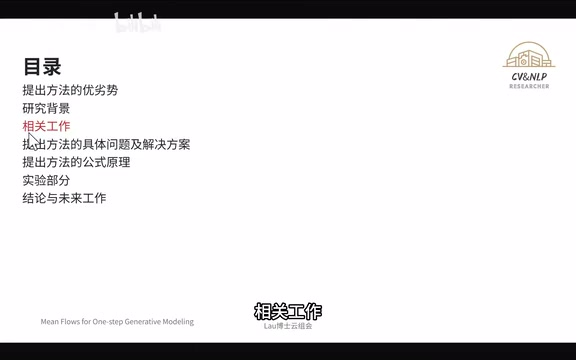
00:04:18–00:04:24 · 画面 023首先是 DiffusionDiffusion 是我们非常熟悉的一个内容 Diffusion 又叫扩散模型它是一种生成模型通过逐步的向数据添加噪声然后训练一个神经网络来逆转这个过程也就是说去让神经网络知道怎么去对一个噪声去去噪然后得到一张完整的 image
00:04:24–00:05:31 · 画面 024
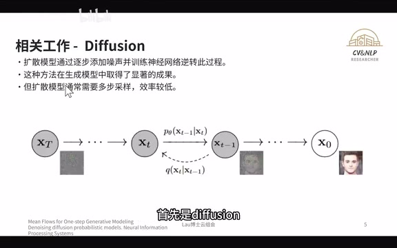
00:04:24–00:05:31 · 画面 024那这种方法呢，它在高质量图片生成的方面呢是有很显著的效果的。那当时呢，由于它有多部采样的这个特性，使得它的这个效率很低。那其中一个非常经典的例子就是 DDPM。那 DDPM 呢就是典型的扩散模型。那它呢也是通过这个逐步去造去生成模型。那它的采样的这个过程通常呢会达到上百部。那这个效率呢是非常的低的。为了解决这个问题后人们就开始从少部或是一部生成模型的角度来提升效率从这个文章的题目以及后续的内容都会提到少部以及一部的策略
00:05:31–00:05:32 · 画面 025
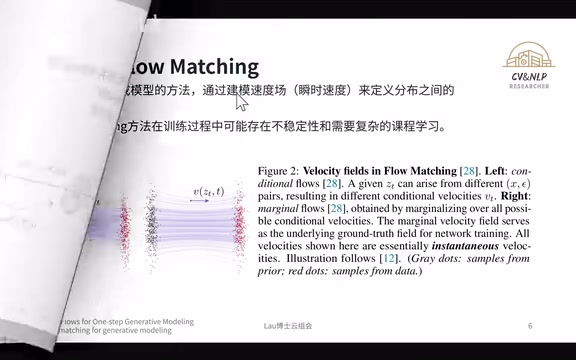
00:05:31–00:05:32 · 画面 025那另外一类具有代表性的生成方法呢就是 Flow Matching。那这个 Flow Matching 它是通过建模这个速度场。那在相对于这个文章提出的这个方法呢，它成为了顺时的速度来定义了分布之间的流路径。那这个 Flow Matching 呢，作者就指出它在训练的这个过程当中呢可能存在着不稳定性以及需要复杂的课程学习。那对于我个人来讲呢，我的理解啊，从直观来讲这个 Flow Matching 呢。
00:05:32–00:06:06 · 画面 026
00:05:32–00:06:06 · 画面 026它就是让模型从学习一个噪声到图像之间的速度场的关系，学得这个规律以后让模型去进行生成。在前面介绍 Diffusion 或是 Flow Matching 的时候，其实也有提到 Few Step 的问题。Few Step 以及 One Step 这一类的模型，它能够有效的去减少。
00:06:06–00:06:11 · 画面 027
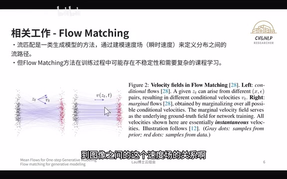
00:06:06–00:06:11 · 画面 02700:06:11–00:06:12 · 画面 028
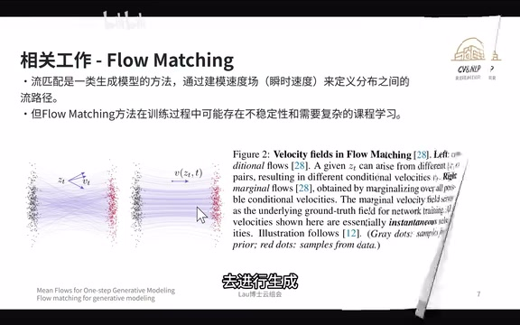
00:06:11–00:06:12 · 画面 02800:06:12–00:07:04 · 画面 029
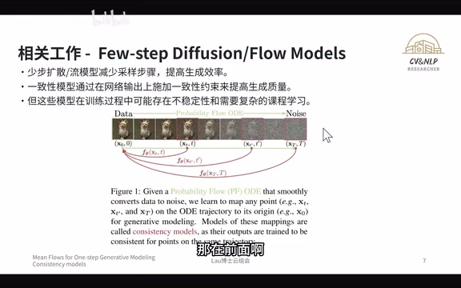
00:06:12–00:07:04 · 画面 029采样步骤来提高这个生成的效率。那但是呢，这个具有一个代表性的就是这个一致性模型，也叫 consistent 的这个 model。那它这里面呢，有介绍这个 few step 以及 one step 的这种策略。那但是啊，它这个模型的话呢由于它在施加了这种一致性约束来提高了生成模型的质量，但这种方法它在训练的过程当中是需要逐步去调整时间域的，使得在训练的过程当中并不是那么的稳定。因此也是针对这个问题，MeanFlow 就引入了平均速度的概念来提升生成质量以及效率。
00:07:04–00:07:05 · 画面 030
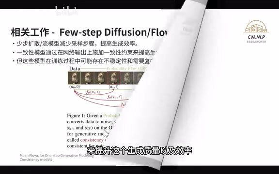
00:07:04–00:07:05 · 画面 030那在前面呢提到了三个具有代表性的这个相关工作，那他们三个呢都会有一个非常具有代表性的这个问题。那这个具有代表性的问题呢，接下来呢我们来看这篇文章提出的 MeanFlow 是怎么去解决它的。那在这里啊，传统的方法呢在一步深层的问题里面呢存在着训练不稳定以及需要复杂的课程学习的问题。那为了解决这些问题呢，MeanFlow 呢就引入了平均速度的概念。
00:07:05–00:07:20 · 画面 031
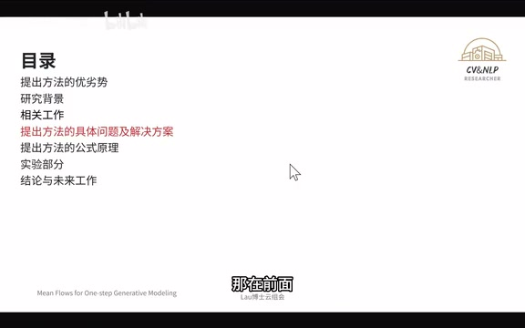
00:07:05–00:07:20 · 画面 03100:07:20–00:08:06 · 画面 032
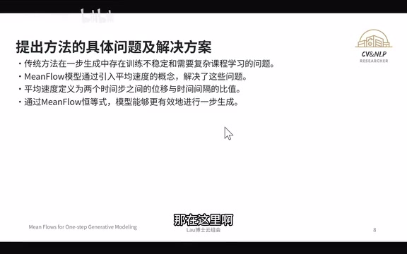
00:07:20–00:08:06 · 画面 032在这里，平均速度就被定义为两个时间步之间的位移与时间间隔的比值通过这个定义作者去推导出了平均速度和瞬时速度之间的内在关系，也就是 MeanFlow 的恒等式。通过这些恒等式模型能够更有效的进行一步的生成，同时避免了传统方法的局限性。后面我们就会提到这一系列的公式，接下来我们来介绍它的核心公式。
00:08:06–00:08:07 · 画面 033
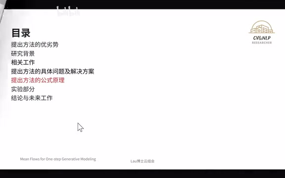
00:08:06–00:08:07 · 画面 03300:08:07–00:08:10 · 画面 034
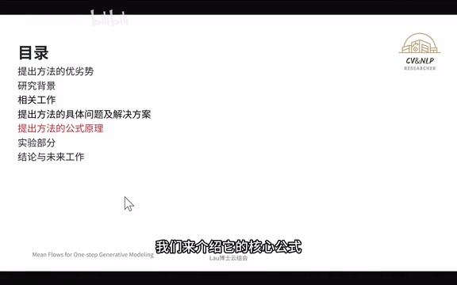
00:08:07–00:08:10 · 画面 034那这里呢，有四个非常重要的公式。我们可以看到第一个平均速度的定义。那在这里呢，我们重点呢就是看这个输入的三个量是什么东西。那这个 set t 呢，如果我们用比较简单的物理学上的定义去理解呢，那实际上我们可以认为这个是一个位移。那 r 跟 t 呢，分别是两个时间段的点，就一头一尾
00:08:10–00:09:21 · 画面 035
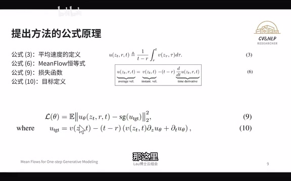
00:08:10–00:09:21 · 画面 035那有了这个位移呢，出于时间那就是平均速度了。那当然了，在这个文章里面呢，Zt 呢实际上是不能被叫做位移的，那它可能更准确的是叫做一段时间里面的这个变化的量。那我们接下来呢去看一下这个 MeanFlow 的恒等式，那作者呢他通过这个用 Average 的这个速度呢去跟这个 Instant 的这个速度呢去做了一个等价啊，就寻找出了这个平均速度跟瞬时速度的这种关系。那这个关系呢就会影响到下面的这个目标函数的这个定义啊。那我们首先看损失函数，那损失函数呢实际上呢就是这个平均速度啊去减去啊这样子的一个目标。那这个目标呢实际上又蕴含着这个 Instant 的这个速度也就是瞬时速度的这个内容在里面。
00:09:21–00:09:27 · 画面 036
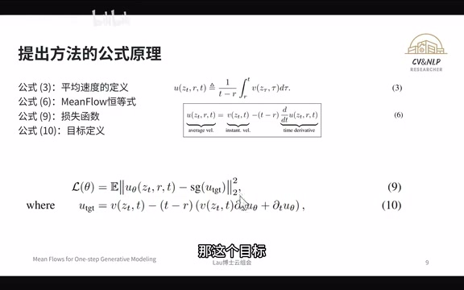
00:09:21–00:09:27 · 画面 03600:09:27–00:09:32 · 画面 037
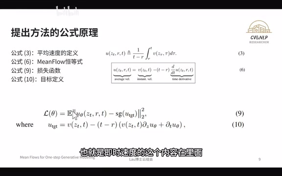
00:09:27–00:09:32 · 画面 037通过这个学习就完成了训练。接下来就是在实验的部分去展示这个工作了。这个工作
00:09:32–00:09:33 · 画面 038
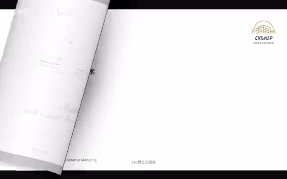
00:09:32–00:09:33 · 画面 03800:09:33–00:09:37 · 画面 039
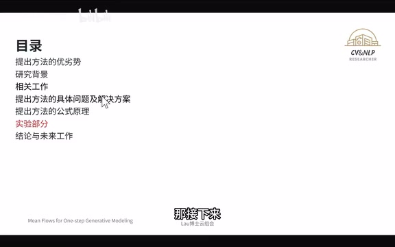
00:09:33–00:09:37 · 画面 03900:09:37–00:10:14 · 画面 040
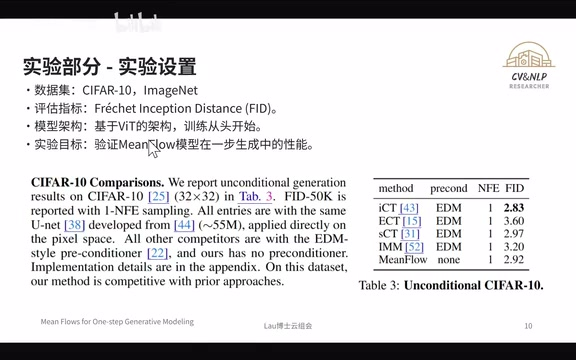
00:09:37–00:10:14 · 画面 040它的泛化性实际上没有被广泛的去验证，因为它只在 CIFAR-10 以及 ImageNet 去做了实验。在这篇文章上面它的这个评估的指标是一个距离的指标 FID。那它的模型的这个架构它是用的是 Scratch，它没有用任何的这种前置的这个数据去进行训练，它是从头 train 的。那我们接下来呢先看一下 CIFAR-10 的结果。那 CIFAR-10 呢实际上 MeanFlow 啊它也并不是最好的结果。那当然呢这个是次用的一个结果，那也非常的不错。
00:10:14–00:10:29 · 画面 041
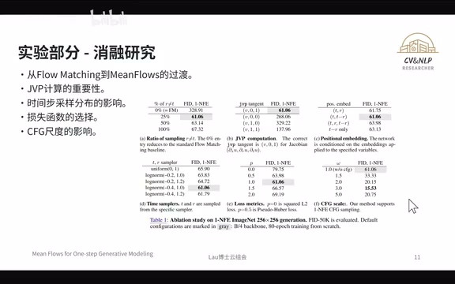
00:10:14–00:10:29 · 画面 041再有就是它的消融实验的部分。刚刚提到它只有在 CIFAR 以及 ImageNet 上面去做实验。前面的 CIFAR 是唯一它做的实验，后面的 ImageNet 主要就是做了消融实验。在消融实验的部分，基于 ImageNet 的数据集的情况下，在这六个方面去做了验证。其中最重要的是 ABF。其中 Case A 它在
00:10:29–00:10:30 · 画面 042
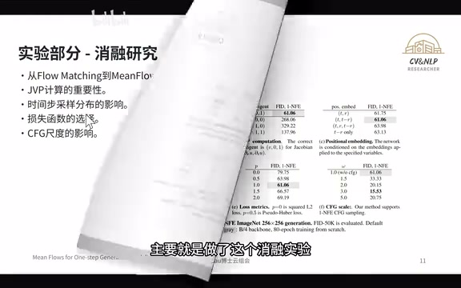
00:10:29–00:10:30 · 画面 04200:10:30–00:11:02 · 画面 043
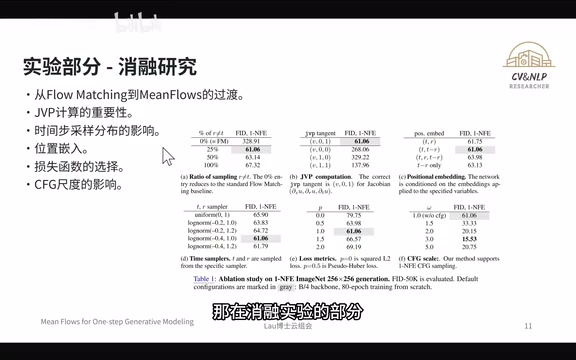
00:10:30–00:11:02 · 画面 043百分比为 0 的时候代表的是 flow matching，在 25 、50 或是 100 的时候代表的是 MeanFlow。在 MeanFlow 的情况下 FID 具有非常大的优势。另外一个就是 JVP 合理的设置，JVP 也能让 FID 有非常大的优势。最后的 CFG 也是有类似的情况，在跟先前的先进工作相比较，MeanFlow 有非常大的优势。
00:11:02–00:11:03 · 画面 044
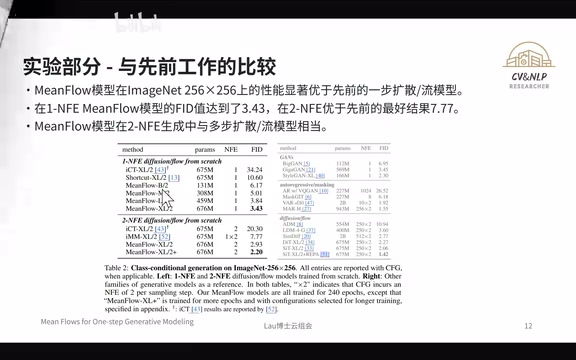
00:11:02–00:11:03 · 画面 04400:11:03–00:11:17 · 画面 045
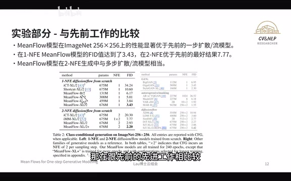
00:11:03–00:11:17 · 画面 045当然这个实验它是基于 ImageNet256x256 上面去进行的我们可以看得到在 MeanFlow 模型很小的 parameter 的数量上的情况下它的 FID 都能达到 6.17 相比上一个 600 多 N 的模型它都要领先了超过 4%
00:11:17–00:11:24 · 画面 046
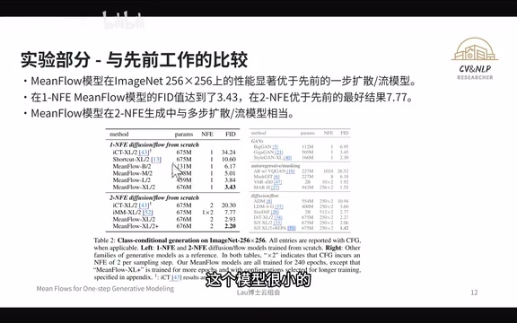
00:11:17–00:11:24 · 画面 04600:11:24–00:11:28 · 画面 047
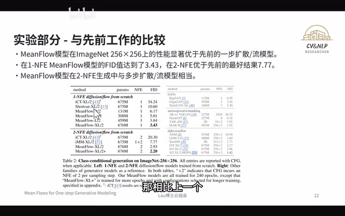
00:11:24–00:11:28 · 画面 04700:11:28–00:11:33 · 画面 048
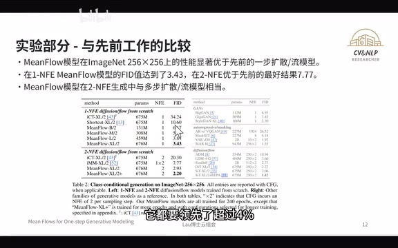
00:11:28–00:11:33 · 画面 048那如果是在同等的 shape 的情况下呢，那这领先的幅度都超过了 7%那下面的这个就更加的明显了，那这个幅度呢会去到 5%左右。那最后呢就到了文章的结论以及 future work 的部分了。那在这里呢结论的部分就是说 MeanFlow 呢它提出了一种新的一步生成的这个框架，那显著了提高了生成质量以及效率。
00:11:33–00:11:44 · 画面 049
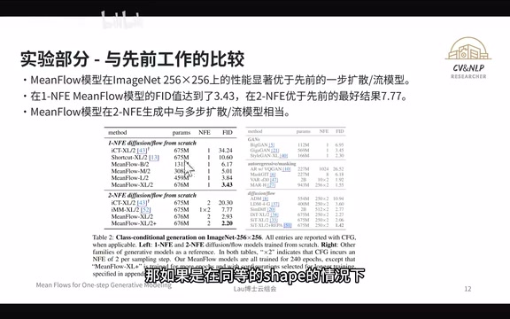
00:11:33–00:11:44 · 画面 04900:11:44–00:11:49 · 画面 050
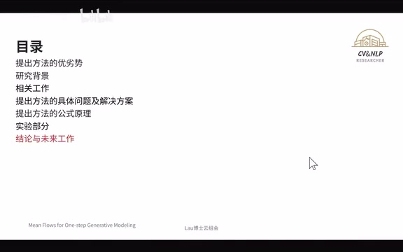
00:11:44–00:11:49 · 画面 05000:11:49–00:12:35 · 画面 051
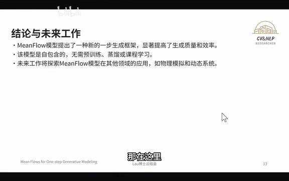
00:11:49–00:12:35 · 画面 051这个模型它是不需要预训练，也不需要蒸馏或是课程学习的，这样子使得 Meanflow 在实际当中有显著的优势。当然了，这个 Meanflow 的话目前的这篇文章仅仅是在 CIFAR10 以及 ImageNet 上面做了验证，它的泛化性还有待考察。那这个 future work 里面呢就包括探索了 MeanFlow 呢在其他领域的一些应用，那比如说这个物理上面的模拟啊或者是动态系统的研究，那这些呢都会推动生成模型的发展。今天的云组会呢我们开到这里就结束了。如果对你有所启发呢，感谢三连家关注。如果你有什么想法呢，欢迎留言。我们下一期节目不见不散。
00:12:35–00:12:41 · 画面 052
00:12:35–00:12:41 · 画面 05200:12:41–00:12:43 · 画面 053
00:12:41–00:12:43 · 画面 05300:12:43–00:12:47 · 画面 054
00:12:43–00:12:47 · 画面 054转写与来源说明 · 0 个自动复核提示
保留 33 个原始语音片段，0 个片段触发自动复核提示。提示仅用于定位可能的术语、重复或识别问题，不等于已确认错误。
讲解画面为源视频截图（576×360），不是可编辑 PPT 文件。全片按每秒 2 帧扫描内容变化，逐步展开页保留；连续动画保留代表画面。清晰度受源视频限制。
原视频：paper/合集_2026-10-16_论文精读/单步秒生图！性能暴增50%！MeanFlow【论文精读】.mp4
SHA-256：35850e399fbc754e884c186a215ca943eea51dbab22e6ad17ea5d78bc57403b8
全文按视频语音与画面制作。原论文可从上方链接下载；完整资料包保留全文、原始逐字稿、字幕和校对记录。